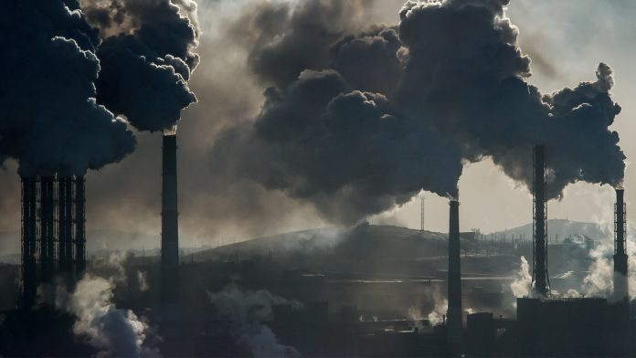
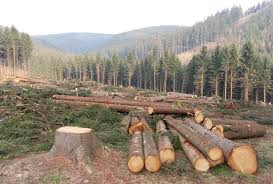

Decomposition of organic waste in landfills produces methane. Improper treatment of landfills causes more gas emissions.


The buring of fossil fuels, like coal, oil, and nature gas leads to the a great amount of contribution to those greenhouse gases that contributes the global warming.
Trees absorb CO2 and emits O2. The loss of forests not only reduce the Earth's ability of air regulation, but also releases stored carbon back to the environment.
